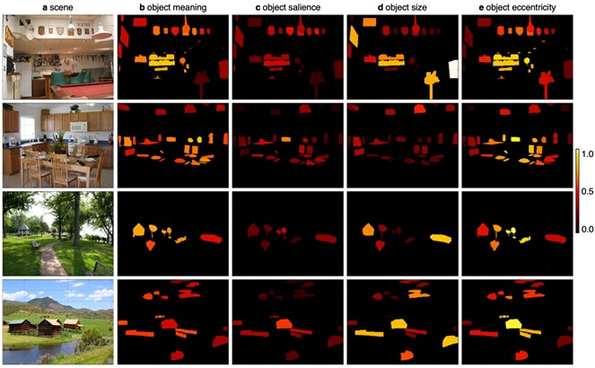
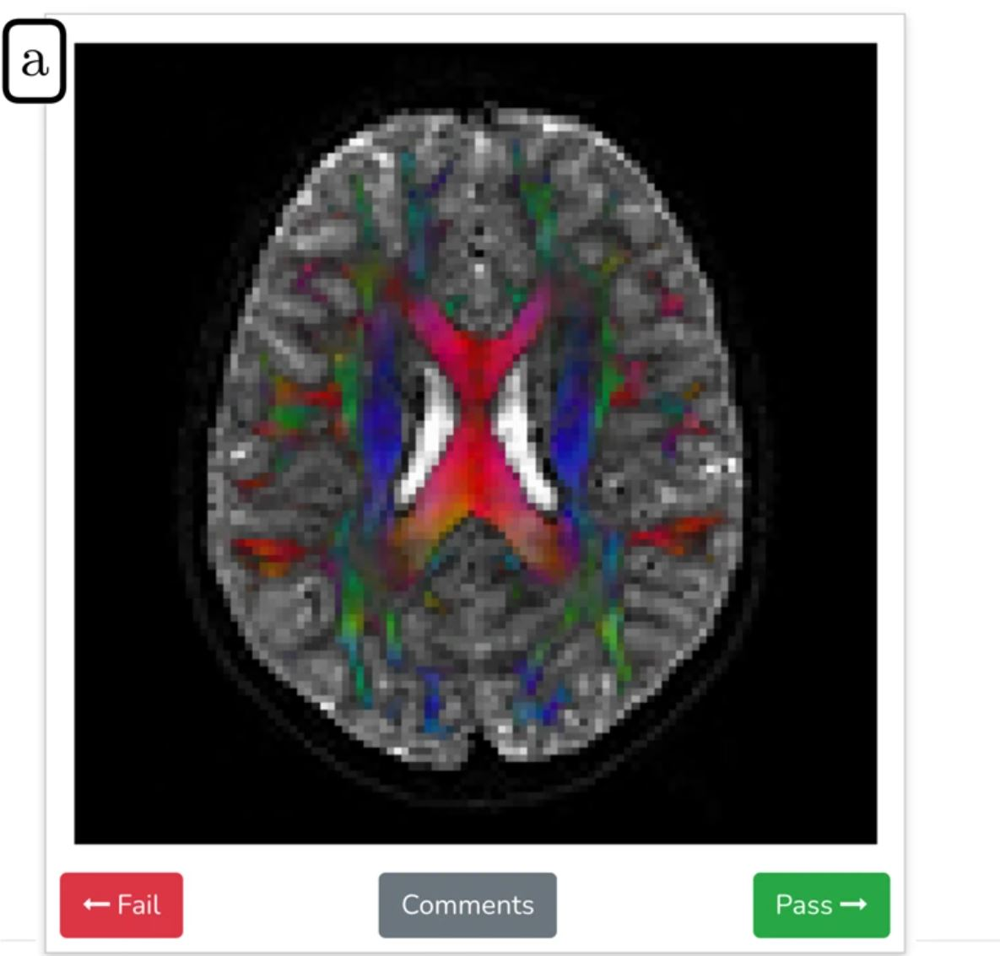

Elizabeth Hall
I am a graduate student researching Vision and Cognitive Science at UC Davis. I work with Joy Geng in the Integrated Attention Lab studying visual perception and memory in the human brain. I previously worked with Chris Baker in the Laboratory of Brain and Cognition at the NIH and with Doug Davidson at the Basque Center for Cognition, Brain, and Language. I spent summer 2023 as a data science intern with the Alexa Economics & Measurement team at Amazon.
ehhall @ ucdavis dot edu google scholar twitter github CV Resume
news
12/2023: New paper with Joy Geng on object attention and boundary extension!
8/2023: I was awarded the UC President's Dissertation Year Fellowship!
7/2022: New paper with Zoe Loh on working memory and fixation durations in scene-viewing!
9/2021: Two new preprints added! I got second place for Best Grad Talk at the Spring Psychology Conference, and I completed the Deep Learning section of Neuromatch!
9/2020: Work with Chris Baker and Wilma Bainbridge on encoding and recall of object / scenes in 7T fMRI is now out in Cerebral Cortex!
4/2020: I was awarded the National Defense Science and Engineering Graduate Fellowship to pursue work on visual attention in virtual reality.
research
 Object-based attention during scene perception elicits boundary contraction in memory
Object-based attention during scene perception elicits boundary contraction in memory
Elizabeth H. Hall, Joy J. Geng
Memory & Cognition, 2024. Code Data
We found that attending to small objects in scenes lead to significantly more boundary contraction in memory, even when other image properties were kept constant. This supports the idea that the extension/contraction in memory may reflect a bias towards an optimal viewing distance!
 Objects are selected for attention based upon meaning during passive scene viewing
Elizabeth H. Hall, Candace Peacock, John M. Henderson
Psychonomic Bulletin & Review, 2023. Preprint Stimuli
We looked at whether fixations were more likely to land on high-meaning objects in scenes. We found that fixations are more likely to be directed to high meaning objects than low meaning objects regardless of object salience.
 An analysis-ready and quality controlled resource for pediatric brain white-matter research
Adam Richie-Halford, Matthew Cieslak, Fibr Community Science Consortium
Scientific Data, 2022.
An open-source dataset on brain white matter from 2700 New York city area children. I helped score the quality of diffusion MRI data, along with over 130 other community scientists.
Working memory control predicts fixation duration in scene-viewing
Zoe Loh, Elizabeth H. Hall, Deborah A. Cronin, John M. Henderson
Psychological Research, 2022.
We fit scene-viewing fixation data to a Ex-Guassian distribution to look at individual differences in distribution means, deviation, and skew. We found that the worse a participant's working memory control was, the more likely they were to have some very long fixations when encoding scene detail into memory.
Highly similar and competing visual scenes lead to diminished object but not spatial detail in memory drawings
Elizabeth H. Hall, Wilma A. Bainbridge Chris I. Baker
Memory, 2021. Preprint Data
We investigated the detail and errors participants can have in memory when having to recall multiple, similar scenes. We found that memory drawings of "competing" scenes have diminished object detail, but are surpisingly still fairly spatially accurate.
Distinct representational structure and localization for visual encoding and recall during visual imagery
Wilma A. Bainbridge, Elizabeth H. Hall, Chris I. Baker
Cerebral Cortex, 2020.
We found that representations of memory content during recall show key differences from encoding in granularity of detail & spatial distribution. We also replicated the finding that brain regions involved in scene memory are interior to those involved in scene perception. See this article from Quanta for more on this idea!
 Eye Movements in Real-World Scene Photographs: General Characteristics and Effects of Viewing Task
Eye Movements in Real-World Scene Photographs: General Characteristics and Effects of Viewing Task
Deborah Cronin, Elizabeth Hall, Jessica Goold, Taylor Hayes, John Henderson
Frontiers in Psychology, 2020.
We examined effects of viewing task on when and where the eyes move in real-world scenes during memorization and an aesthetic judgment tasks. Distribution-level analyses revealed significant task-driven differences in eye movement behavior.
Drawings of real-world scenes during free recall reveal detailed object and spatial information in memory
Wilma A. Bainbridge, Elizabeth H. Hall, Chris I. Baker
Nature Communications, 2019.
Data
Participants studied 30 scenes and drew as many images in as much detail as possible from memory. The resulting memory-based drawings were scored by thousands of online observers, revealing numerous objects, few memory intrusions, and precise spatial information. See this article from Scientific American for more!